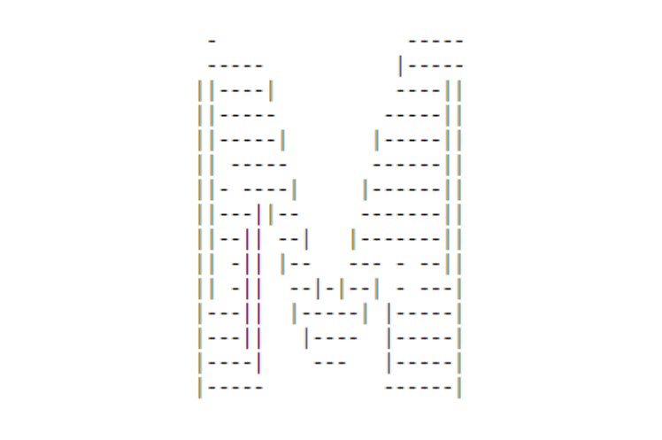

Умова 1: На площині задані обмежена лініями область R і точка A(x1,y 1), B(x2,y2), C(x3, y3)
Розробити програму яка обчислює периметр і площу трикутника ABC, якщо точки A, B, C належать області R і не лежать на одній прямій, інакше виводити відповідне повідомлення.
Умова 2: Найти помилку у вказаному коді
function checkParent (src, dest)
{
while (src != null)
{
if (src.tagName == dest) return src
src = src.parentElement
}
return null
Умова 3: Спробуйте вивести на екран
Умова 4: Оформлення цитат і визначень
Мова HTML інтерпретується браузерами, тобто форматований текст відображається на екрані монітора комп'ютера або мобільного пристрою.Приклади цитат:
1. Станіслав Лец стверджував: Найчастіше вихід там, де був вхід
2. Як гарно змальовує весняну пору року Є. Гуцало:
Весна зіткала вчора гобелен у лузі — з трав, із квітів, з верболозів.https://disted.edu.vn.ua/courses/learn/2811
Зіткала вітер і зіткала клен, грози зіткала молоді погрози.
©Виконав Казмірук Дмитро